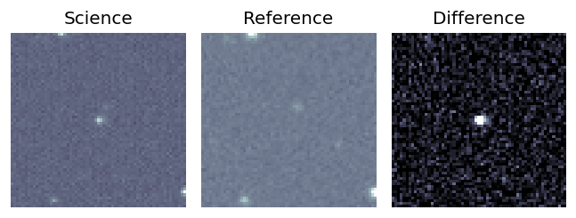
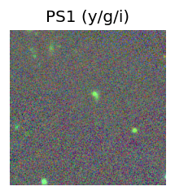
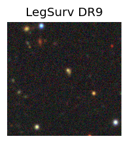
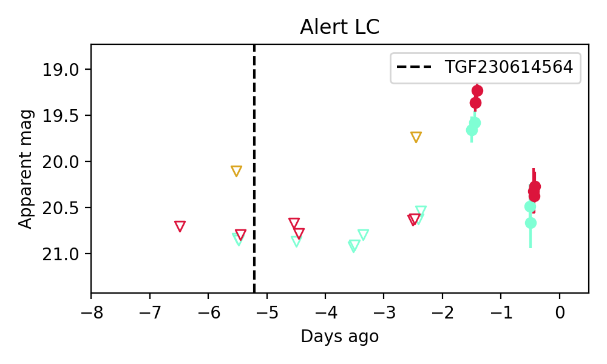

Candidate List 20230618Previous Day Next Day
Section 1: New Sources (age<1d) Section 2: Old (1-5d) sources observed last nightplaceholder
Section 1: New Afterglow/FBOT Cands Last Night (1)
1. ZTF23aaoohpy (Afterglow?) (TNS: S) [Back to Top] [Share] [Trigger Swift] [Fritz] [Lasair]RA, Dec: 247.90589, 26.36621 16h31m37.41s, 26d21m58.34sGalactic (l, b): 45.31169, 41.25029 ext(g-r) = 0.05
SDSS (10 arcsec):Found SDSS phot-z: z=0.35; peak abs mag = -22.28
PS1: 0 sources in 3 arcsec
LegacySurvey: 1 sources in 3 arcsec Closest: d = 4.98 arcsec, 319.2 deg (east of north) photoz=0.47 (68% bounds 0.4, 0.52), type=EXP peak abs mag = -22.92 (68% bounds -22.53, -23.22)

Extinction-corrected gr color:
From alerts: 0.26 +/- 0.08 mag
Consistent with synchrotron, g-r>0!
Rise Rate:
g: 1.08 mag/day
r: 1.31 mag/day
i: -99 mag/day
Fade Rate:
g: -99 mag/day
r: -99 mag/day
i: -99 mag/day